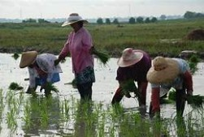
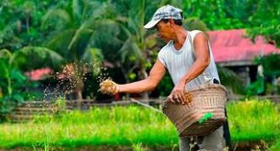

Sektor ng Agrikultura
Agrikultura — Isang agham at sining ng pagtatanim ng halaman at pag-aalaga ng hayop upang makalikha ng pagkain at iba pang produkto.
Mga Gawain sa Agrikultura
- Pagsasaka – Produksyon ng mga pananim tulad ng palay, mais, niyog, saging, at pinya.
- Pangingisda – Pagkuha ng yamang-tubig mula sa dagat, ilog, at lawa.
- Paghahayupan – Pag-aalaga ng hayop para sa karne, gatas, itlog, at iba pang produkto.
- Paggugubat – Paglinang at pangangalaga ng kagubatan at yamang kahoy.
Kahalagahan ng Agrikultura
- Pinagmumulan ng pagkain ng bansa
- Nagbibigay ng trabaho sa maraming Pilipino
- Pinagkukunan ng hilaw na materyales para sa industriya
- Nagpapasok ng kita at dolyar sa bansa
Mga Suliranin sa Agrikultura
- Pagliit ng lupang sakahan
- Kakulangan ng makabagong teknolohiya
- Kakulangan sa pasilidad at imprastraktura
- Polusyon at climate change
- Kahirapan ng mga magsasaka at mangingisda
Mga Ahensya ng Pamahalaan
- Department of Agriculture (DA)
- Bureau of Fisheries and Aquatic Resources (BFAR)
- Bureau of Animal Industry (BAI)
- Ecosystem Research and Development Bureau (ERDB)

